O projeto "Papel Vivo" é uma iniciativa escolar interdisciplinar focada na sustentabilidade, que transforma o papel descartado nas instituições de ensino em "papel semente" artesanal ecológico. Para garantir a secagem segura sem danificar a germinação das sementes, o processo produtivo utiliza uma estufa automatizada controlada por Arduino Uno, alimentada por energia limpa proveniente de um sistema de energia solar. Além de promover a educação ambiental e o engajamento prático em tecnologia, ciências e artes para os alunos de tempo integral, a proposta inclui a criação de um site para divulgar o passo a passo da iniciativa, permitindo que o modelo sustentável seja facilmente replicado por outras comunidades escolares.
Veja como fazemos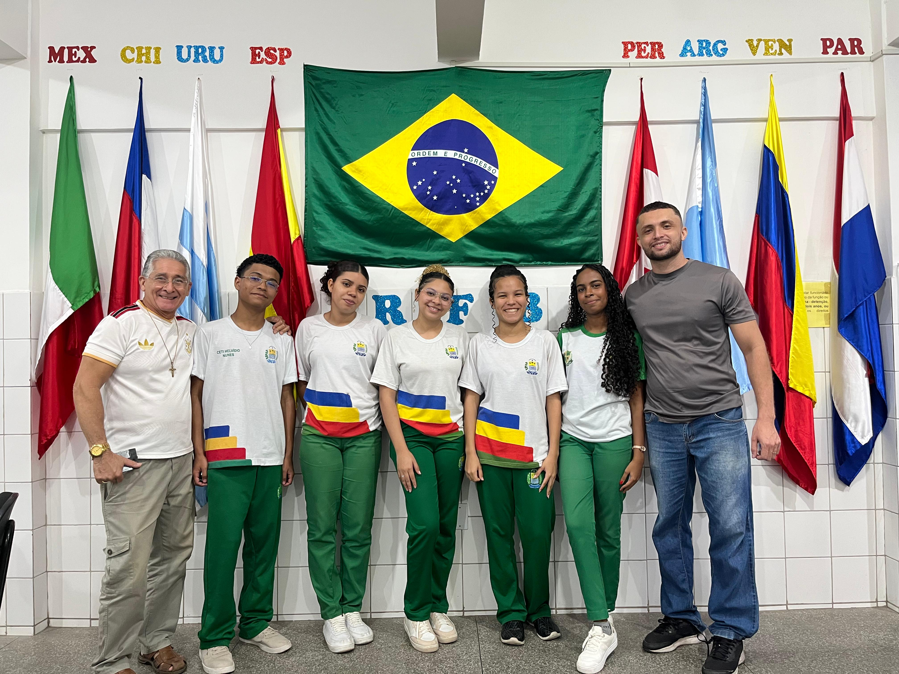
Os educadores que guiam a pesquisa e o desenvolvimento do projeto.
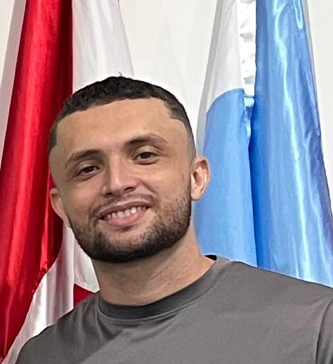
Professor Orientador
Professor Orientador
Professor Orientador
Os alunos responsáveis por transformar essa ideia em realidade.
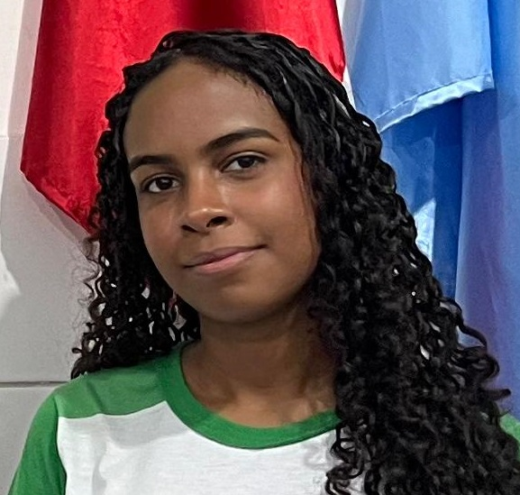
Aluna
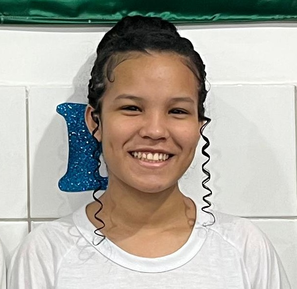
Aluna
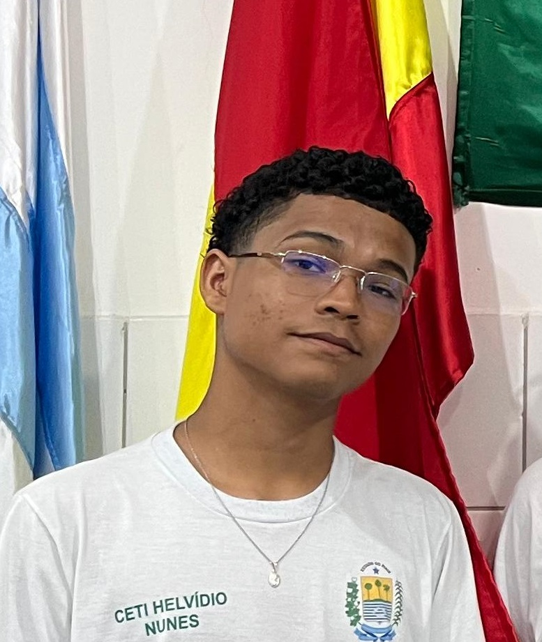
Aluno
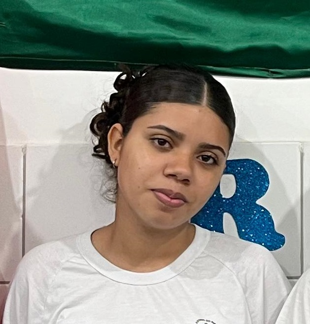
Aluna
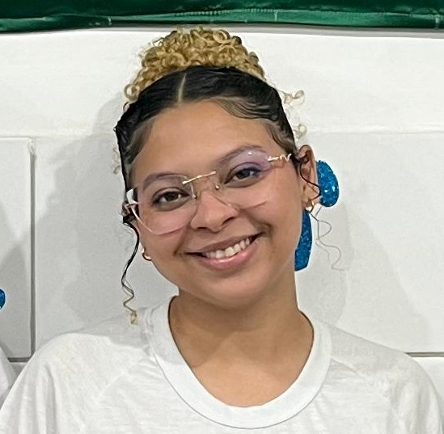
Aluna
Em vez de ir para o lixo, nosso papel vai para a terra. Escolhemos sementes especiais que, além de germinarem plantas incríveis, têm forte ligação com a nossa cultura e com as cores da natureza.
Uma semente nativa e preciosa. Símbolo da nossa biodiversidade, cultivar cacau é valorizar a nossa terra e a rica origem do chocolate.
Famoso por seu pigmento vermelho intenso. Suas sementes não só germinam belas árvores, mas também são fontes valiosas de corantes 100% naturais.
Também conhecido como cúrcuma. Destaca-se pelo seu tom amarelo-ouro vibrante e por ser uma planta rústica, excelente para cultivo.
Cores 100% naturais, sem químicos agressivos. Em nosso projeto, unimos a força do carvão mineral aos pigmentos extraídos das próprias sementes que cultivamos, criando uma paleta de cores viva e ecologicamente correta para nossa arte no papel sustentável.
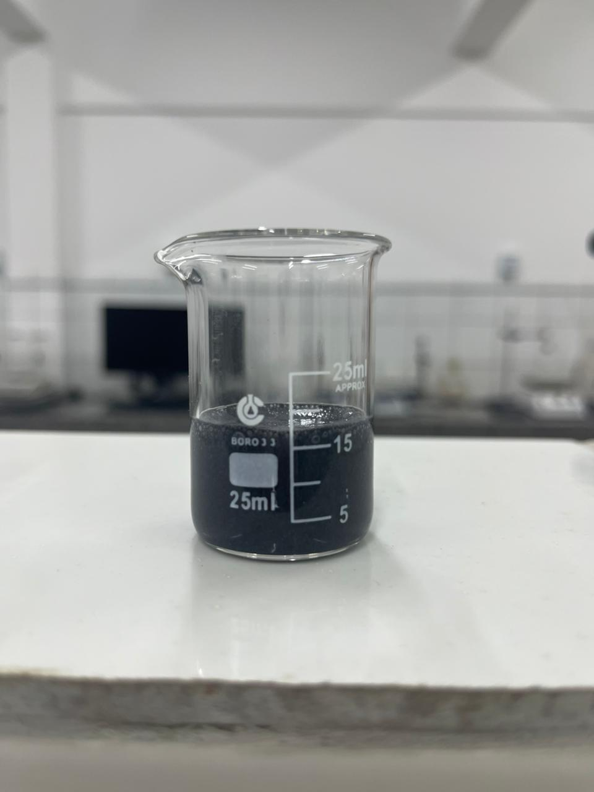
Tons escuros intensos e marcações rústicas para contornos.
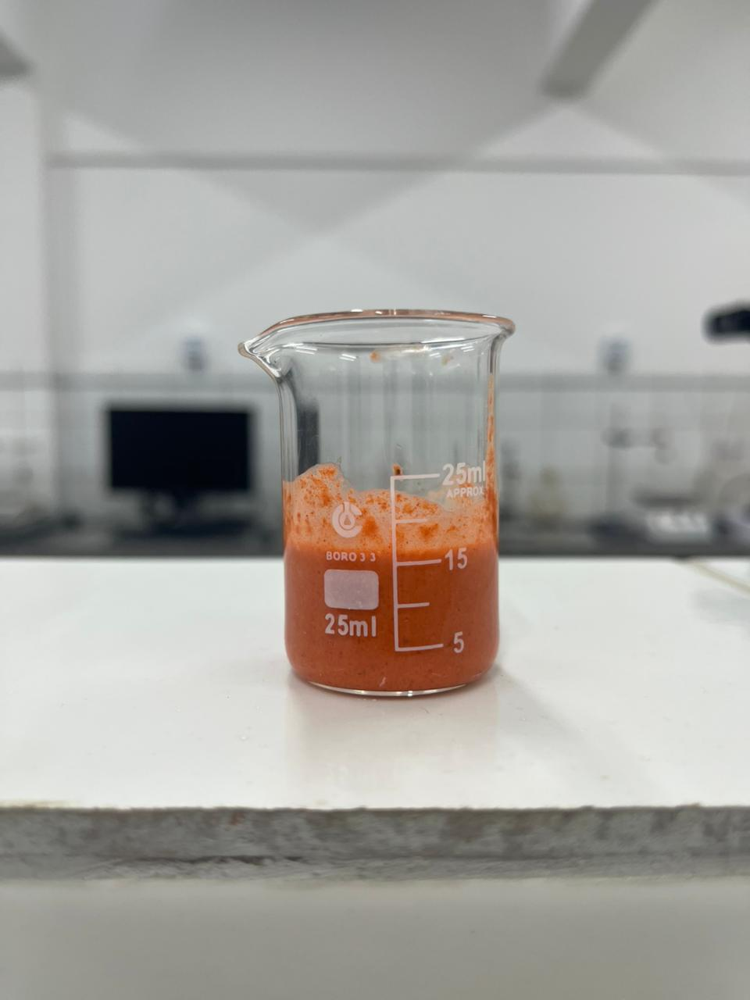
Pigmento natural que rende um vermelho terroso e vibrante.
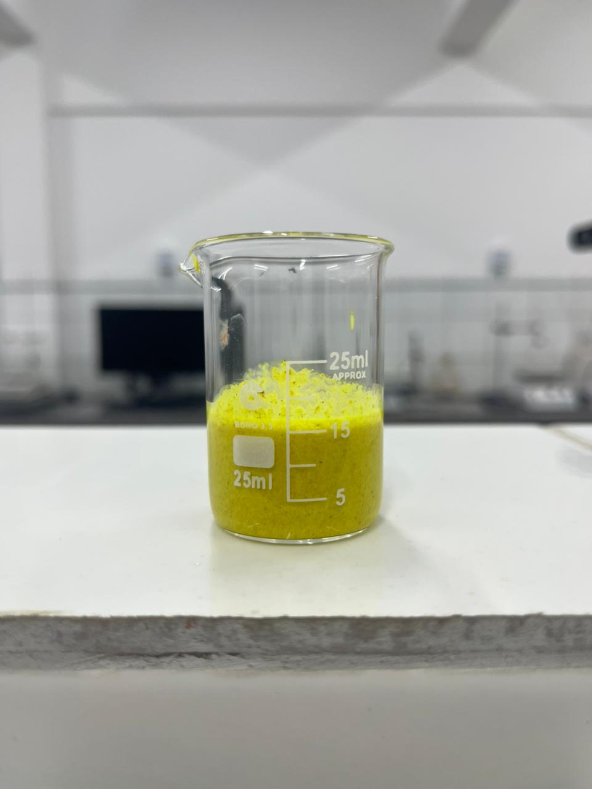
Extração que proporciona um amarelo-ouro radiante e cheio de vida.
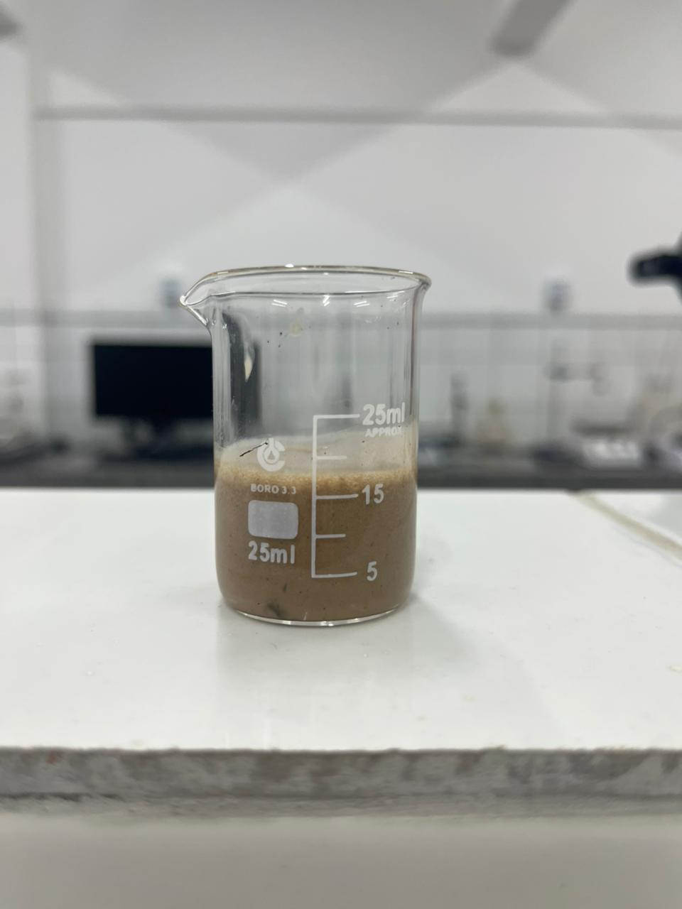
Tons de marrom ricos e texturizados, com forte conexão à nossa terra.
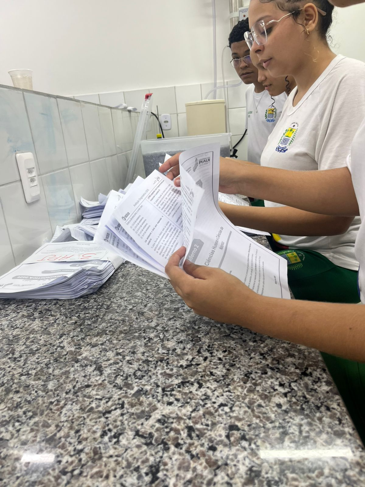
Um ponto de descarte é disponibilizado na escola para receber provas, atividades e papéis do cotidiano. O material coletado passa por uma triagem para remover o que não é papel (grampos, adesivos).
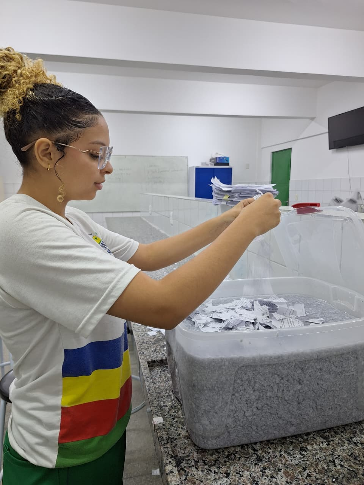
O papel selecionado é cortado e imerso em água até se transformar em uma pasta homogênea e moldável.
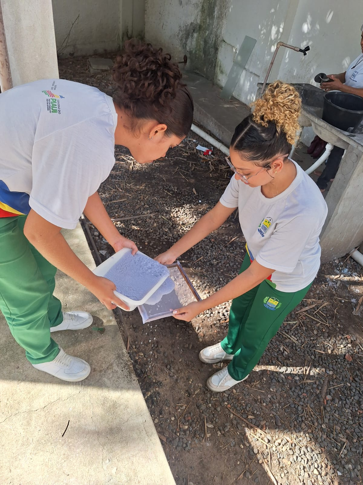
A pasta é prensada em um molde de madeira para retirar o excesso de água. Com o papel ainda úmido, as sementes são distribuídas e posicionadas uniformemente na folha.
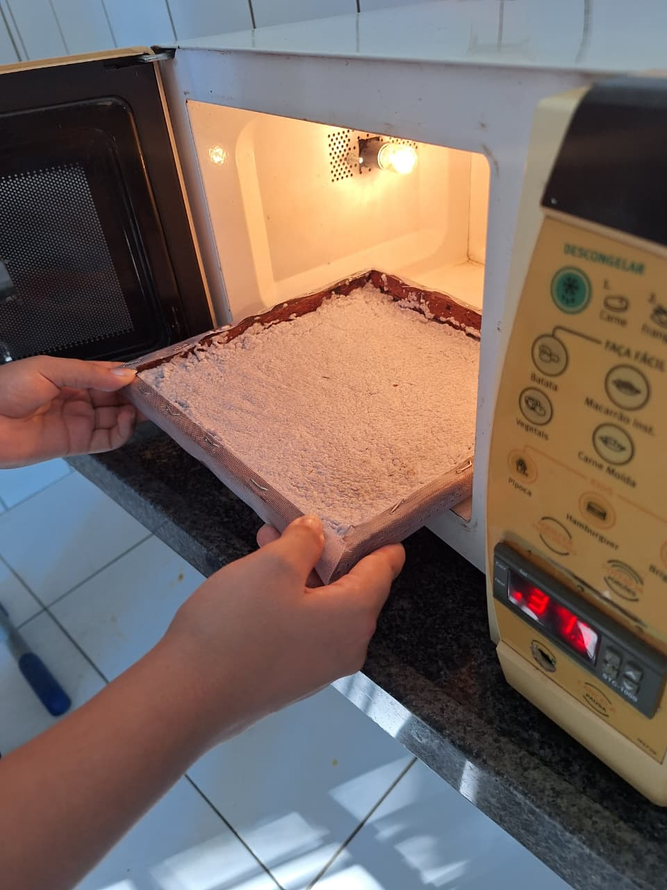
O papel com as sementes vai para a estufa automatizada com Arduino, que mantém a temperatura entre 35°C e 40°C para secar o papel sem danificar a germinação. A estufa é alimentada por energia solar.
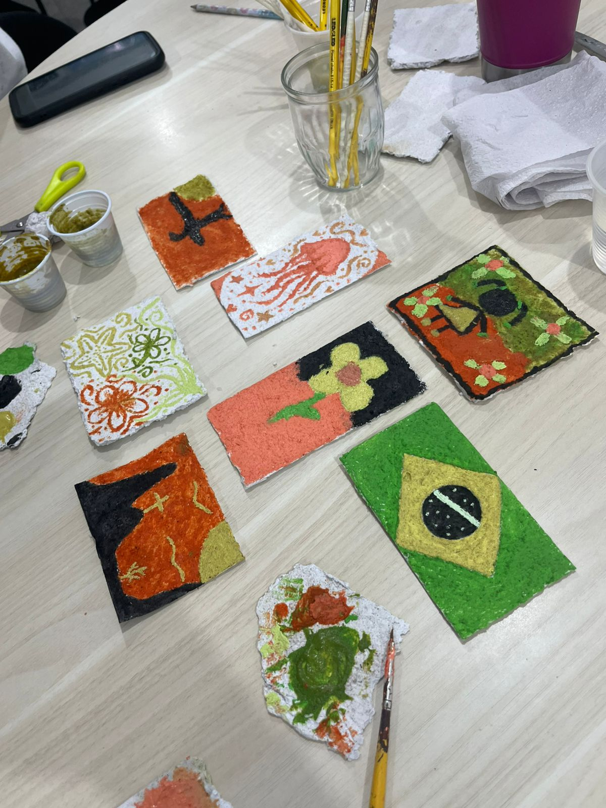
O papel sustentável agora recebe arte feita com pigmentos naturais ecológicos, finalizando o processo de reaproveitamento de forma criativa.
O Arduino será responsável pelo controle automático da temperatura da estufa utilizada na secagem do Papel Vivo. Por meio de um sensor de temperatura, o sistema monitora continuamente o ambiente interno da estufa, ligando ou desligando as lâmpadas de aquecimento conforme a necessidade. Dessa forma, a secagem do papel ocorre de maneira controlada, evitando temperaturas excessivas que possam danificar as sementes presentes no papel reciclado. O sistema automatizado também contribui para maior eficiência energética e segurança durante o processo de secagem.
Repositório no GitHub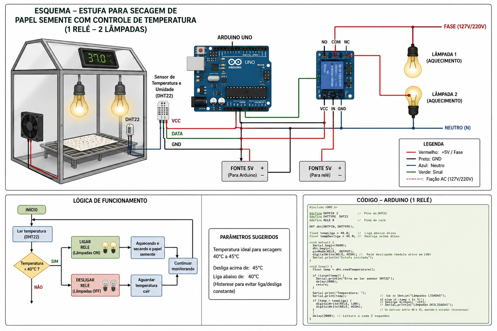